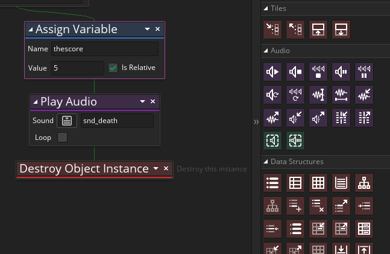
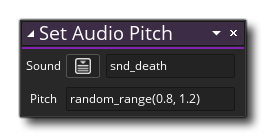

When you play the game you should here the sound being played every time the enemy is destroyed, however the sound will quickly become tiring to the ear of those that play the game. We need to "spice it up" a bit and one of the easiest way to do this is to simply change the pitch of the sound.
So, still in the obj_enemy Step Event, and before the action for playing the sound, we need to add the action Set Audio Pitch :

When you use a sound effect or music in GameMaker Studio 2 it is played with a pitch value of 1. This is an arbitrary number that simply tells GameMaker Studio 2 to play the sound "as is". If you lower the value of the pitch to say 0.7, then the sound will play at a lower pitch and a value higher than 1 like 1.5 will play it higher. In the action above we will use the random_range function to give us a random value between 0.8 and 1.2 for the sound effect pitch, and so every time it is played it will sound slightly different. This is a great method to add more life to your games and can be applied to almost any repetitive sound effect to make it more interesting and realistic.
The Set Audio Pitch action should now look like this: 
Note that if you set the pitch anywhere in code then the referenced sound will always play at that pitch unless set again, which is why we call this function not once at the start of the game, but every time the sound is going to played.
Play your game again now and note how the sound changes every time you destroy an enemy.